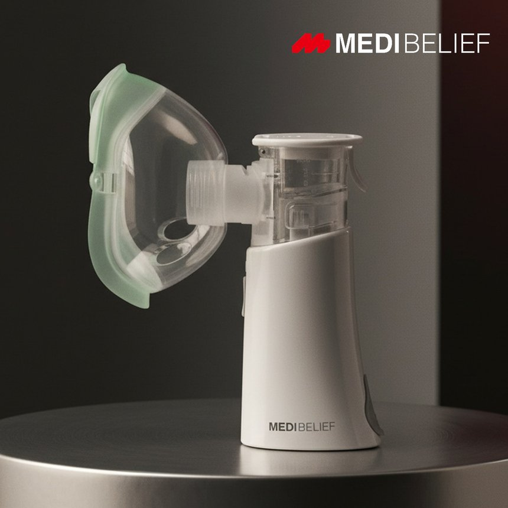
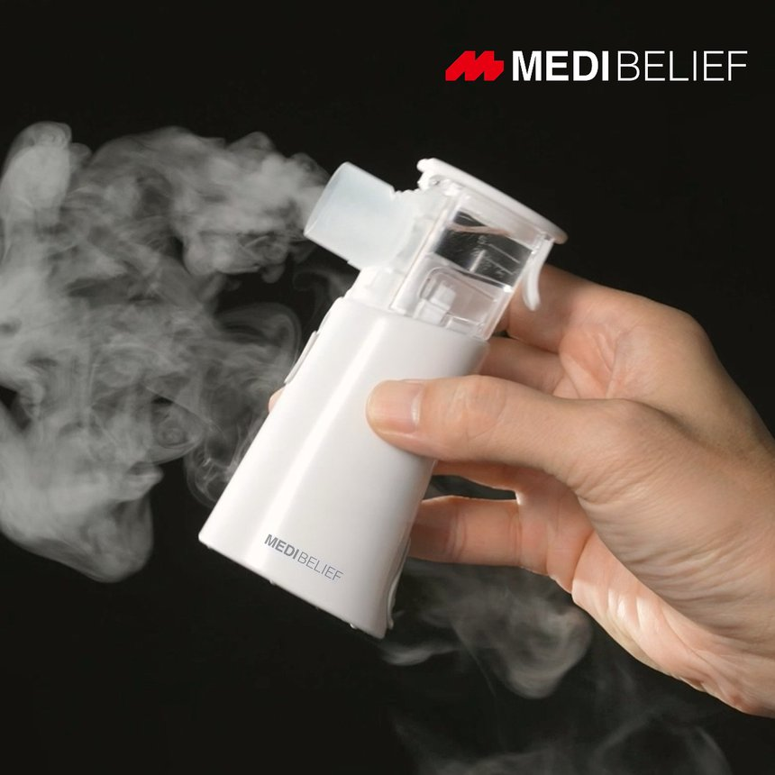
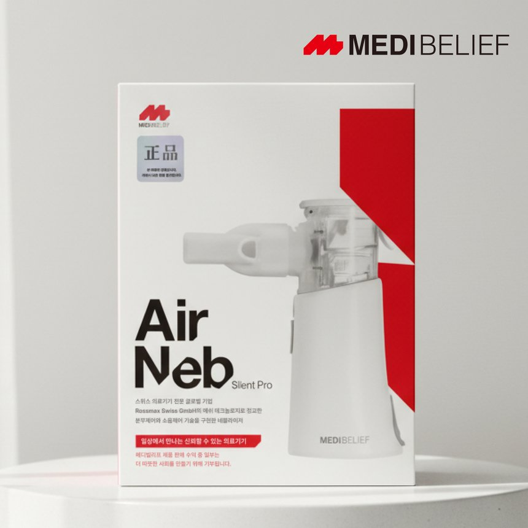
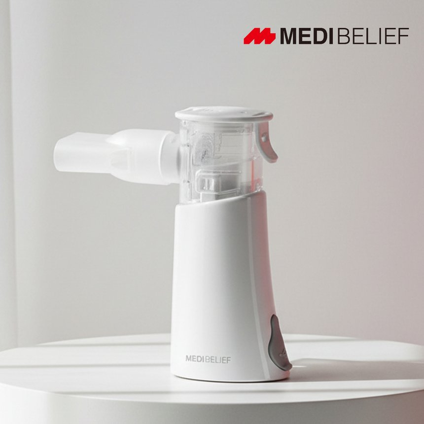
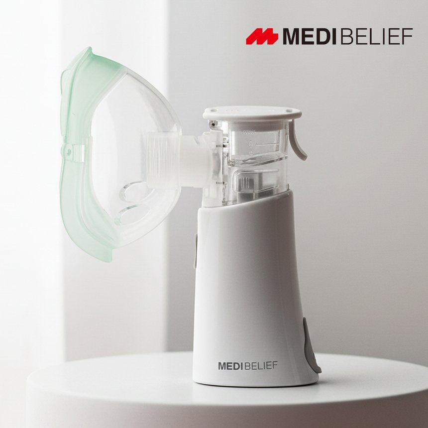

AirNeb Nebulizer Review: Overview
This AirNeb nebulizer review looks at a small Korean portable mesh nebulizer that many parents keep at home for children with coughs, asthma or bronchitis. The AirNeb Silent Pro (spelled 에어넵, often written "Airnep") weighs about 70 g, runs on two AA batteries and turns prescribed liquid medicine into a fine mist with a vibrating mesh rather than a noisy compressor.
The Medibelief listing on Naver Shopping Connect was priced at 149,000 KRW when collected on October 27, 2026. We checked the model, certification and specs against the Korean MFDS record, the Rossmax NC200 manual and specifications, Medibelief's own product pages and owner reviews. We did not run lab tests on it. This review is not medical advice; always follow your doctor's instructions for medicine and dose.
"A pocket-size, very quiet mesh nebulizer that is easy to use at night. Treat it as a medical device: use prescribed medicine only and clean the mesh after every session."

How a Mesh Nebulizer Works
Traditional home nebulizers use an air compressor, which is bulky and loud. A mesh nebulizer pushes the liquid through a metal plate with thousands of tiny holes that vibrates about 120,000 times a second (approx. 120 kHz). The result is a soft, cool mist that you inhale through the mouthpiece or mask.
Rossmax quotes a particle size (MMAD) of 4.0 µm or less, with a test result of 3.12 µm and about 71% of the dose in particles under 5 µm, and a nebulization rate of at least 0.30 mL per minute with saline. Smaller particles can reach deeper into the airways, which is why particle size matters. Thick medicines or suspensions can behave differently, so check with your pharmacist that your medicine is suitable for a mesh nebulizer.


Korean Medical Device Certification and Origin
The MFDS lists AirNeb Silent Pro as a Class 2 ultrasonic inhaler (초음파 흡입기), certification No. 수인 24-484, dated September 30, 2024, model NC200, imported by Medibelief. Its registered intended use is to deliver liquid medicine to the lungs as a mist. Medibelief says it went on sale in January 2025.
The "Swiss R&D" in the Korean product name refers to Rossmax Swiss GmbH, which ordered the device; the MFDS record lists the manufacturer as GMC Inc. in China. That is normal for medical devices, but it is worth knowing. The same NC200 is sold under the Rossmax brand in Europe and Asia.
Design, Power and Everyday Use
The white body measures 42 × 70 × 117 mm and weighs 70 g without batteries. The medicine cup holds up to 8 mL (2–6 mL recommended), and the cup is angled so the liquid keeps flowing to the mesh even when you hold the device upright. You can use two AA batteries or a micro-USB cable, so it also works in a car or on a trip.
Owner reviews on the Medibelief store say it is easy for grandparents to use, quiet enough that a child does not panic, and that the clear mask feels firm but soft at the edges. The trade-off is care: the mesh must be flushed after every use or the holes clog, and replacement medicine cups cost 59,000 KRW on Medibelief's store.


Key Specs
| Spec | AirNeb Silent Pro (Rossmax NC200) |
|---|---|
| Type | Handheld vibrating-mesh nebulizer |
| Korean certification | MFDS Class 2 ultrasonic inhaler, No. 수인 24-484 (Sept 30, 2024), model NC200 |
| Mesh frequency | Approx. 120 kHz (about 120,000 vibrations per second) |
| Particle size (MMAD) | ≤ 4.0 µm (Rossmax test: 3.12 µm; about 71% under 5 µm) |
| Nebulization rate | ≥ 0.30 mL/min (0.9% saline) |
| Medicine cup | Max. 8 mL; 2–6 mL recommended |
| Noise | Under 20 dB (maker claim) |
| Power | 2 × AA (alkaline or NiMH) or micro-USB 5V; under 1.2 W |
| Auto-off | When the cup is empty or after about 10 minutes |
| Size / weight | 42 × 70 × 117 mm / 70 g without batteries |
| In the box | Main unit, medicine cup, mouthpiece, child mask, USB cable, batteries, pouch |
| Korean price | 149,000 KRW on Naver Shopping Connect (collected Oct 27, 2026) |
Specs come from the Korean MFDS record, the Rossmax NC200 manual and product page and Medibelief product information; the price comes from the Naver Shopping Connect listing. One manual edition lists noise as under 40 dBA at 1 m, so treat the 20 dB figure as a maker claim. Medibelief product photos, unmodified.
How It Compares
| AirNeb Silent Pro (this) | Compressor nebulizer | Cheap unbranded mesh nebulizer | |
|---|---|---|---|
| How it makes mist | Vibrating mesh | Air compressor and jet | Vibrating mesh |
| Size and weight | Pocket size, 70 g | Shoebox size, 1–2 kg | Pocket size |
| Noise | Very quiet (maker: under 20 dB) | Loud (often 50+ dB) | Varies |
| Power | AA batteries or USB | Mains power | USB or battery |
| Medical certification | Korean Class 2 | Usually certified | Often none |
| Upkeep | Flush mesh after every use | Simple rinse of cup and tubing | Mesh clogs easily |
Pros & Cons
| Pros | Cons |
|---|---|
| Very quiet, so easier to use with a sleeping or nervous child | Mesh needs careful cleaning after every use |
| Pocket size and only 70 g; runs on AA batteries or USB | Replacement medicine cups are expensive |
| Fine particles (MMAD ≤ 4 µm) and steady output | Some thick medicines may not suit mesh nebulizers |
| Certified in Korea as a Class 2 medical device | Not FDA cleared; Korean labels and service |
| Mouthpiece and child mask included | "Swiss" branding, but made in China |
Who It Suits (and Who Should Skip It)
- Yes: Parents whose doctor has prescribed nebulized medicine for a child and who want a quiet device for night-time use.
- Yes: Adults with asthma or COPD who need a light nebulizer for travel or the office, with their doctor's OK.
- Yes: Families in Korea who want a certified device with local service rather than an unbranded online gadget.
- No: Anyone hoping to use it with essential oils, tap water or unprescribed products; that is unsafe.
- No: People who will not clean it after each use; a compressor nebulizer is more forgiving.
AirNeb Nebulizer FAQ
What is the AirNeb (Airnep) nebulizer?
AirNeb (에어넵) is a handheld mesh nebulizer sold in Korea by Medibelief (메디빌리프). The certified model, AirNeb Silent Pro, is listed by the Korean MFDS as an ultrasonic (mesh) inhaler, model NC200, made for the Swiss company Rossmax Swiss GmbH. It turns liquid medicine into a fine mist that you breathe in through a mouthpiece or mask.
Is the AirNeb nebulizer a medical device?
Yes, in Korea. The MFDS record lists AirNeb Silent Pro as a Class 2 ultrasonic inhaler, certification No. 수인 24-484 (September 30, 2024), model NC200. A Korean certification is not an FDA clearance, and this review is not medical advice. Only use medicines your doctor or pharmacist has prescribed for a nebulizer.
Can babies and toddlers use the AirNeb?
The Korean listing names newborns, infants, children and adults, and the box includes a child mask. Whether a baby should use a nebulizer, and with which medicine, is a decision for your paediatrician. An adult should always prepare the device and stay with the child during use.
How quiet is it and what powers it?
Medibelief and Rossmax quote a noise level under 20 dB. It runs on two AA batteries (alkaline or NiMH rechargeable) or through a micro-USB cable, and it switches itself off when the medicine cup is empty or after about 10 minutes.
How do I clean the mesh?
After each use, empty the leftover medicine, add about 2 mL of saline or distilled water to the cup and run the device briefly to flush the mesh. Rinse the parts (not the main body) in clean water below 40°C and let them air-dry on a clean towel. A blocked mesh is the most common cause of weak mist.
Portable Mesh Nebulizer (Handheld Type)
The AirNeb is sold in Korea with Korean labels and service. Similar handheld mesh nebulizers are sold in the U.S. under other brands; compare current listings on Amazon and ask your doctor which medicine and device to use.